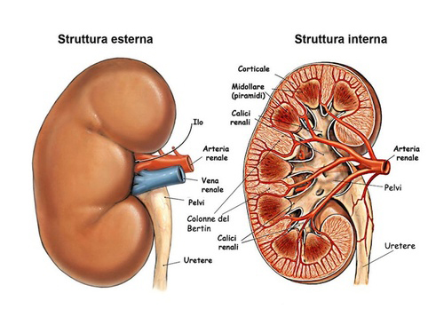
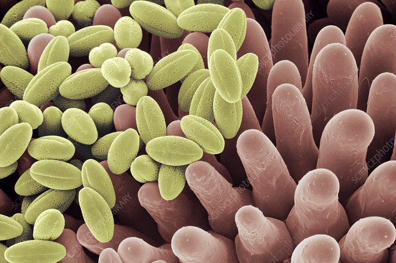

L'apparato escretore, e in particolare i reni, svolge il ruolo cruciale di filtrare il sangue per rimuovere scorie e sostanze tossiche. Poiché le microplastiche circolano nel flusso sanguigno, i reni rappresentano uno dei principali organi coinvolti nel loro smaltimento, ma anche uno dei siti più vulnerabili all'accumulo.

Il rene filtra circa 180 litri di sangue al giorno attraverso i nefroni. La capacità delle microplastiche di interferire dipende dalle dimensioni:
Le microplastiche stimolano la produzione di ROS, danneggiando i mitocondri e riducendo l’efficienza delle cellule renali, fino alla possibile morte cellulare.
L’infiammazione cronica può danneggiare i podociti, causando proteinuria, segno di sofferenza renale.

L’esposizione cronica può contribuire a: